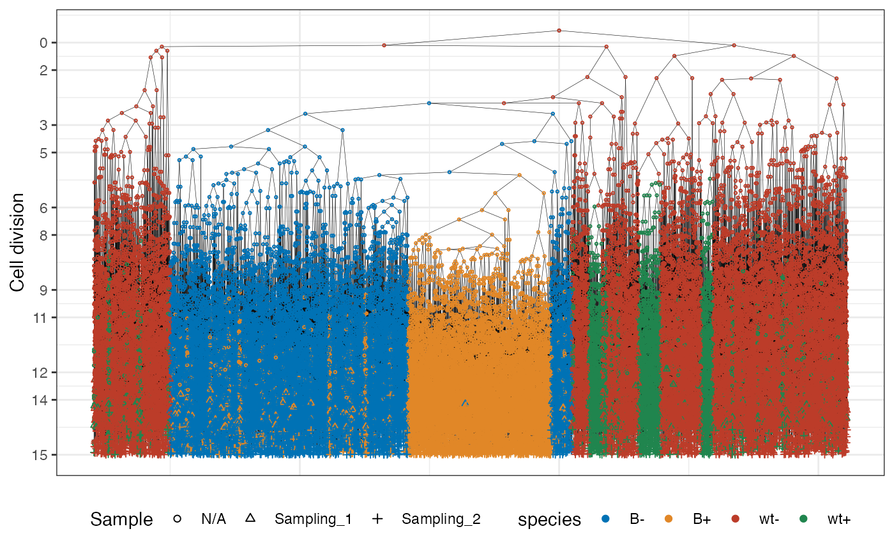
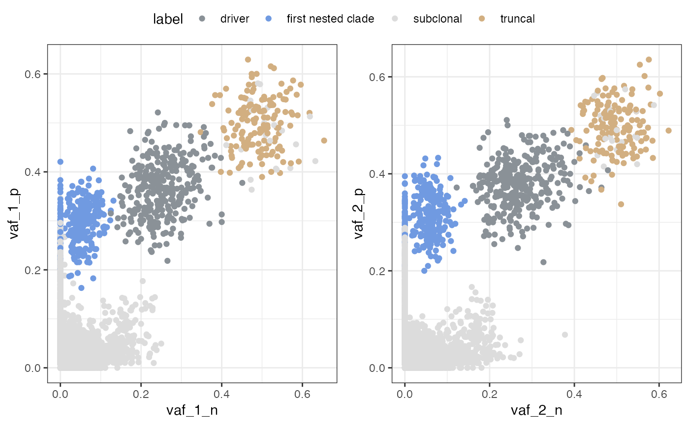
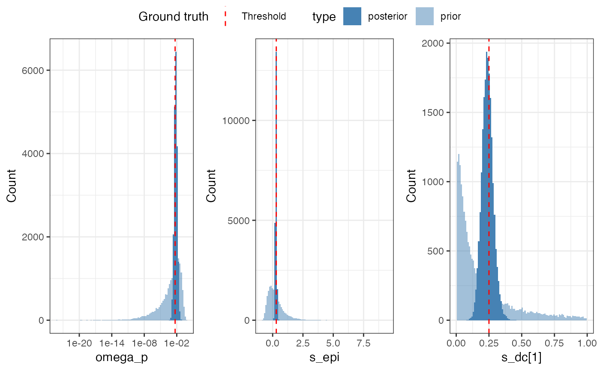

vignettes/articles/driver.Rmd
driver.RmdIntroduction
This vignette illustrates how PEPI can be used to analyze systems in which selective driver mutations interact with epigenetic state dynamics.
Unlike the other examples, here clonal expansion is driven by genetic selection, potentially confounding epigenetic inheritance signals. PEPI explicitly models this interaction in a unified Bayesian framework. The dataset is simulated with ProCess, a cancer evolution simulator available at https://github.com/caravagnalab/ProCESS. Cancer cells were collected at two time points and sorted according to their epistate. On both subset of cells, WGS is simulated in order to obtain a VAF coordinate for any time point and epistate.
We will:
• visualize the lineage tree and driver placement • inspect VAF structure • fit a joint driver–epigenetic model • interpret posterior estimates
library(PEPI)
library(dplyr)
#> Error in get(paste0(generic, ".", class), envir = get_method_env()) :
#> object 'type_sum.accel' not found
#>
#> Attaching package: 'dplyr'
#> The following objects are masked from 'package:stats':
#>
#> filter, lag
#> The following objects are masked from 'package:base':
#>
#> intersect, setdiff, setequal, union
library(ggplot2)
#> Warning: package 'ggplot2' was built under R version 4.4.3
library(ggpubr)
library(tidyr)
library(reshape2)
#>
#> Attaching package: 'reshape2'
#> The following object is masked from 'package:tidyr':
#>
#> smithsforest <- PEPI::driver_example$forest
#> Warning: replacing previous import 'cli::num_ansi_colors' by
#> 'crayon::num_ansi_colors' when loading 'easypar'
#> [32m✔[39m Loading [32m[32mctree[32m[39m, [3m[3m'[3mClone trees in cancer[3m'[3m[23m. Support : [3m[34m[3m[34m<https://caravagn.github.io/ctree/>[34m[3m[39m[23m
#> Warning: replacing previous import 'Biostrings::translate' by
#> 'seqinr::translate' when loading 'dndscv'
#> [32m✔[39m Loading [32mmobster[39m, [3m'Model-based clustering in cancer'[23m. Support :
#> [3m[34m<https://caravagn.github.io/mobster/>[39m[23m.
PEPI::plot_forest(forest)
The lineage tree shows a dominant expanding branch seeded by a driver event. Epigenetic states are partially conserved but not perfectly aligned with clonal structure, indicating interaction between selection and state switching.
muts <- PEPI::driver_example$muts
get_branch = function(forest,cell_id,stop_id){
s = cell_id
branch = s
while(s > stop_id){
s = forest %>% filter(cell_id == s) %>% pull(ancestor)
if(s > stop_id){branch = c(branch,s)}
}
return(branch)
}
id_B = forest %>% as_tibble() %>% filter(mutant == "B") %>% pull(cell_id) %>% min()
id_cl = forest %>% as_tibble() %>% filter(mutant == "B",epistate == "+") %>% pull(cell_id) %>% min()
branch_dr = get_branch(forest,cell_id = id_B,stop = 0)
branch_cl = get_branch(forest,cell_id = id_cl,stop = id_B)
muts = muts %>% mutate(label = ifelse(cell_id %in% branch_dr,"driver",
ifelse(cell_id %in% branch_cl,"first nested clade","subclonal"))) %>%
mutate(label = ifelse(cell_id == 0,"truncal",label))
p1 <- PEPI::plot_vaf(muts, variables = c("vaf_1_n", "vaf_1_p"))
p2 <- PEPI::plot_vaf(muts, variables = c("vaf_2_n", "vaf_2_p"))
ggarrange(plotlist= list(p1$scatterplots[[1]],p2$scatterplots[[1]]),nrow = 1, ncol = 2,common.legend = T) 
Driver-associated mutations form a high-VAF cluster. This cluster reaches a higher VAF in the sample because, at the time of driver emergence, the population is smaller, and the driver therefore expands while competing with fewer cells. We also observe a distinct cluster associated with the first nested clade within the driver lineage.
m_clade = muts %>% filter(label == "first nested clade") %>% nrow()
m_driver = muts %>% filter(label == "driver") %>% nrow()
vaf_clade = muts %>% filter(label == "first nested clade") %>% dplyr::select(starts_with("vaf")) %>%
reshape2::melt() %>% group_by(variable) %>% summarize(v = mean(value)) %>%
pivot_wider(names_from = variable,values_from = v)
#> No id variables; using all as measure variables
vaf_driver = muts %>% filter(label == "driver",cell_id == id_B) %>% dplyr::select(starts_with("vaf"))%>% reshape2::melt() %>% filter(value < Inf) %>%
group_by(variable) %>% summarize(v = mean(value)) %>%
pivot_wider(names_from = variable,values_from = v)
#> No id variables; using all as measure variables
clade_statistics <- tibble(
cluster_name = c("S1","S2"),
n_muts = c(m_clade,m_driver),
vaf_1_n = c(vaf_clade$vaf_1_n,vaf_driver$vaf_1_n),
vaf_1_p = c(vaf_clade$vaf_1_p,vaf_driver$vaf_1_p),
vaf_2_n = c(vaf_clade$vaf_2_n,vaf_driver$vaf_2_n),
vaf_2_p = c(vaf_clade$vaf_2_p,vaf_driver$vaf_2_p),
is_clade = c(TRUE,FALSE),
names = c("B","B"),
driver_type = c("dc","dc"),
has_driver = c(TRUE,TRUE),
rewind = c(FALSE,FALSE)
)
times = forest %>% filter(!is.na(sample)) %>% group_by(sample) %>%
summarize(t = max(birth_time)) %>% pull(t) %>% sort()
counts = driver_example$counts
n_times = 2
c1 = counts %>% filter(time >= times[1] - 0.01 & time < times[1] + 0.01)
c1 = c1[c(nrow(c1)-1,nrow(c1)),]
c2 = counts %>% filter(time >= times[2] - 0.01 & time < times[2] + 0.01)
c2 = c2[c(nrow(c2)-1,nrow(c2)),]
ztot = c(c1 %>% pull(count) %>% sum(),c2 %>% pull(count) %>% sum())
rho_1 = forest %>% filter(sample == "Sampling_1") %>% group_by(epistate) %>% summarize(n = length(cell_id))
ccf_1_n = (rho_1 %>% filter(epistate == "-") %>% pull(n))/(rho_1 %>% pull(n) %>% sum())
ccf_1_p = (rho_1 %>% filter(epistate == "+") %>% pull(n))/(rho_1 %>% pull(n) %>% sum())
rho_2 = forest %>% filter(sample == "Sampling_2") %>% group_by(epistate) %>% summarize(n = length(cell_id))
ccf_2_n = (rho_2 %>% filter(epistate == "-") %>% pull(n))/(rho_2 %>% pull(n) %>% sum())
ccf_2_p = (rho_2 %>% filter(epistate == "+") %>% pull(n))/(rho_2 %>% pull(n) %>% sum())
zminus = c(ccf_1_n,ccf_2_n)*ztot
zplus = c(ccf_1_p,ccf_2_p)*ztot
counts <- tibble(
count_n = zminus,
count_p = zplus,
time = times
)
mu = driver_example$mu$mean
genomic_constants <- tibble(
variable = c("genome_length", "mu"),
value = c(51e6, mu)
)
pepi_obj = init(clade_statistics = clade_statistics,counts = counts,
genomic_constants = genomic_constants)
pepi_obj
#> $clade_statistics
#> [38;5;246m# A tibble: 2 × 11[39m
#> cluster_name n_muts vaf_1_n vaf_1_p vaf_2_n vaf_2_p is_clade names driver_type
#> [3m[38;5;246m<chr>[39m[23m [3m[38;5;246m<int>[39m[23m [3m[38;5;246m<dbl>[39m[23m [3m[38;5;246m<dbl>[39m[23m [3m[38;5;246m<dbl>[39m[23m [3m[38;5;246m<dbl>[39m[23m [3m[38;5;246m<lgl>[39m[23m [3m[38;5;246m<chr>[39m[23m [3m[38;5;246m<chr>[39m[23m
#> [38;5;250m1[39m S1 264 0.047[4m4[24m 0.294 0.048[4m7[24m 0.313 TRUE B dc
#> [38;5;250m2[39m S2 312 0.217 0.326 0.236 0.355 FALSE B dc
#> [38;5;246m# ℹ 2 more variables: has_driver <lgl>, rewind <lgl>[39m
#>
#> $counts
#> [38;5;246m# A tibble: 2 × 3[39m
#> count_n count_p time
#> [3m[38;5;246m<dbl>[39m[23m [3m[38;5;246m<dbl>[39m[23m [3m[38;5;246m<dbl>[39m[23m
#> [38;5;250m1[39m [4m1[24m[4m9[24m[4m5[24m232. [4m7[24m[4m5[24m923. 14.4
#> [38;5;250m2[39m [4m5[24m[4m3[24m[4m7[24m863. [4m2[24m[4m9[24m[4m6[24m465. 15.4
#>
#> $genomic_constants
#> [38;5;246m# A tibble: 2 × 2[39m
#> variable value
#> [3m[38;5;246m<chr>[39m[23m [3m[38;5;246m<dbl>[39m[23m
#> [38;5;250m1[39m genome_length 5.10[38;5;246me[39m+7
#> [38;5;250m2[39m mu 4.81[38;5;246me[39m[31m-7[39m
#>
#> attr(,"class")
#> [1] "PEPI"The object requires clade statistics (number of mutations, ccf), total cell counts at the different time points and genomic constants as mutation rate and genomic length.
pepi_obj <- fit_pepi(
pepi_obj,
model_type = "logistic",
ms_driver_n = NULL,
sigma_driver_n = NULL,
ms_dc = -2,
sigma_dc = 1.5,
ms_cd = NULL,
sigma_cd = NULL,
alpha_lambda = 0.6, beta_lambda = 1,
alpha_plus = 10, beta_plus = 220,
alpha_minus = 10, beta_minus = 220,
alpha_n = 10, beta_n = 1e5,
alpha_p = 0.2, beta_p = 10,
t_min = -40,
ms_epi = 0.1, sigma_epi = 0.5,
ccf_thr_clade = 0.1, ccf_thr_count = 0.02,
include_bp = T,
n_chains = 4,
parallel_chains = 4,
adapt_delta = 0.98,
iter_warmup = 1000, iter_sampling = 5000
)
#> CmdStan path set to: /Users/riccardobergamin/.cmdstan/cmdstan-2.35.0
#> Running MCMC with 4 parallel chains...
#> Chain 1 Rejecting initial value:
#> Chain 1 Error evaluating the log probability at the initial value.
#> Chain 1 Exception: poisson_lpmf: Rate parameter is -227.377, but must be nonnegative! (in '/var/folders/7s/5fh6x1r96tbf608dv_gzdryc0000gn/T/RtmpZ8fGPV/model-774014ffc288.stan', line 366, column 4 to column 81)
#> Chain 1 Exception: poisson_lpmf: Rate parameter is -227.377, but must be nonnegative! (in '/var/folders/7s/5fh6x1r96tbf608dv_gzdryc0000gn/T/RtmpZ8fGPV/model-774014ffc288.stan', line 366, column 4 to column 81)
#> Chain 1 Rejecting initial value:
#> Chain 1 Error evaluating the log probability at the initial value.
#> Chain 1 Exception: poisson_lpmf: Rate parameter is -1420.23, but must be nonnegative! (in '/var/folders/7s/5fh6x1r96tbf608dv_gzdryc0000gn/T/RtmpZ8fGPV/model-774014ffc288.stan', line 366, column 4 to column 81)
#> Chain 1 Exception: poisson_lpmf: Rate parameter is -1420.23, but must be nonnegative! (in '/var/folders/7s/5fh6x1r96tbf608dv_gzdryc0000gn/T/RtmpZ8fGPV/model-774014ffc288.stan', line 366, column 4 to column 81)
#> Chain 1 Iteration: 1 / 6000 [ 0%] (Warmup)
#> Chain 1 Informational Message: The current Metropolis proposal is about to be rejected because of the following issue:
#> Chain 1 Exception: gamma_lpdf: Random variable is 0, but must be positive finite! (in '/var/folders/7s/5fh6x1r96tbf608dv_gzdryc0000gn/T/RtmpZ8fGPV/model-774014ffc288.stan', line 241, column 0 to column 43)
#> Chain 1 If this warning occurs sporadically, such as for highly constrained variable types like covariance matrices, then the sampler is fine,
#> Chain 1 but if this warning occurs often then your model may be either severely ill-conditioned or misspecified.
#> Chain 1
#> Chain 1 Informational Message: The current Metropolis proposal is about to be rejected because of the following issue:
#> Chain 1 Exception: gamma_lpdf: Random variable is 0, but must be positive finite! (in '/var/folders/7s/5fh6x1r96tbf608dv_gzdryc0000gn/T/RtmpZ8fGPV/model-774014ffc288.stan', line 241, column 0 to column 43)
#> Chain 1 If this warning occurs sporadically, such as for highly constrained variable types like covariance matrices, then the sampler is fine,
#> Chain 1 but if this warning occurs often then your model may be either severely ill-conditioned or misspecified.
#> Chain 1
#> Chain 1 Informational Message: The current Metropolis proposal is about to be rejected because of the following issue:
#> Chain 1 Exception: gamma_lpdf: Random variable is 0, but must be positive finite! (in '/var/folders/7s/5fh6x1r96tbf608dv_gzdryc0000gn/T/RtmpZ8fGPV/model-774014ffc288.stan', line 241, column 0 to column 43)
#> Chain 1 If this warning occurs sporadically, such as for highly constrained variable types like covariance matrices, then the sampler is fine,
#> Chain 1 but if this warning occurs often then your model may be either severely ill-conditioned or misspecified.
#> Chain 1
#> Chain 1 Informational Message: The current Metropolis proposal is about to be rejected because of the following issue:
#> Chain 1 Exception: gamma_lpdf: Random variable is 0, but must be positive finite! (in '/var/folders/7s/5fh6x1r96tbf608dv_gzdryc0000gn/T/RtmpZ8fGPV/model-774014ffc288.stan', line 244, column 0 to column 32)
#> Chain 1 If this warning occurs sporadically, such as for highly constrained variable types like covariance matrices, then the sampler is fine,
#> Chain 1 but if this warning occurs often then your model may be either severely ill-conditioned or misspecified.
#> Chain 1
#> Chain 1 Informational Message: The current Metropolis proposal is about to be rejected because of the following issue:
#> Chain 1 Exception: poisson_lpmf: Rate parameter is -3.19206e-83, but must be nonnegative! (in '/var/folders/7s/5fh6x1r96tbf608dv_gzdryc0000gn/T/RtmpZ8fGPV/model-774014ffc288.stan', line 366, column 4 to column 81)
#> Chain 1 If this warning occurs sporadically, such as for highly constrained variable types like covariance matrices, then the sampler is fine,
#> Chain 1 but if this warning occurs often then your model may be either severely ill-conditioned or misspecified.
#> Chain 1
#> Chain 1 Informational Message: The current Metropolis proposal is about to be rejected because of the following issue:
#> Chain 1 Exception: poisson_lpmf: Rate parameter is -1.66808e-17, but must be nonnegative! (in '/var/folders/7s/5fh6x1r96tbf608dv_gzdryc0000gn/T/RtmpZ8fGPV/model-774014ffc288.stan', line 366, column 4 to column 81)
#> Chain 1 If this warning occurs sporadically, such as for highly constrained variable types like covariance matrices, then the sampler is fine,
#> Chain 1 but if this warning occurs often then your model may be either severely ill-conditioned or misspecified.
#> Chain 1
#> Chain 1 Informational Message: The current Metropolis proposal is about to be rejected because of the following issue:
#> Chain 1 Exception: poisson_lpmf: Rate parameter is -0.212043, but must be nonnegative! (in '/var/folders/7s/5fh6x1r96tbf608dv_gzdryc0000gn/T/RtmpZ8fGPV/model-774014ffc288.stan', line 366, column 4 to column 81)
#> Chain 1 If this warning occurs sporadically, such as for highly constrained variable types like covariance matrices, then the sampler is fine,
#> Chain 1 but if this warning occurs often then your model may be either severely ill-conditioned or misspecified.
#> Chain 1
#> Chain 1 Informational Message: The current Metropolis proposal is about to be rejected because of the following issue:
#> Chain 1 Exception: poisson_lpmf: Rate parameter is -1151.12, but must be nonnegative! (in '/var/folders/7s/5fh6x1r96tbf608dv_gzdryc0000gn/T/RtmpZ8fGPV/model-774014ffc288.stan', line 366, column 4 to column 81)
#> Chain 1 If this warning occurs sporadically, such as for highly constrained variable types like covariance matrices, then the sampler is fine,
#> Chain 1 but if this warning occurs often then your model may be either severely ill-conditioned or misspecified.
#> Chain 1
#> Chain 1 Informational Message: The current Metropolis proposal is about to be rejected because of the following issue:
#> Chain 1 Exception: poisson_lpmf: Rate parameter is -3754.74, but must be nonnegative! (in '/var/folders/7s/5fh6x1r96tbf608dv_gzdryc0000gn/T/RtmpZ8fGPV/model-774014ffc288.stan', line 366, column 4 to column 81)
#> Chain 1 If this warning occurs sporadically, such as for highly constrained variable types like covariance matrices, then the sampler is fine,
#> Chain 1 but if this warning occurs often then your model may be either severely ill-conditioned or misspecified.
#> Chain 1
#> Chain 1 Informational Message: The current Metropolis proposal is about to be rejected because of the following issue:
#> Chain 1 Exception: gamma_lpdf: Random variable is 0, but must be positive finite! (in '/var/folders/7s/5fh6x1r96tbf608dv_gzdryc0000gn/T/RtmpZ8fGPV/model-774014ffc288.stan', line 241, column 0 to column 43)
#> Chain 1 If this warning occurs sporadically, such as for highly constrained variable types like covariance matrices, then the sampler is fine,
#> Chain 1 but if this warning occurs often then your model may be either severely ill-conditioned or misspecified.
#> Chain 1
#> Chain 1 Informational Message: The current Metropolis proposal is about to be rejected because of the following issue:
#> Chain 1 Exception: gamma_lpdf: Random variable is 0, but must be positive finite! (in '/var/folders/7s/5fh6x1r96tbf608dv_gzdryc0000gn/T/RtmpZ8fGPV/model-774014ffc288.stan', line 241, column 0 to column 43)
#> Chain 1 If this warning occurs sporadically, such as for highly constrained variable types like covariance matrices, then the sampler is fine,
#> Chain 1 but if this warning occurs often then your model may be either severely ill-conditioned or misspecified.
#> Chain 1
#> Chain 2 Rejecting initial value:
#> Chain 2 Error evaluating the log probability at the initial value.
#> Chain 2 Exception: poisson_lpmf: Rate parameter is -3999.17, but must be nonnegative! (in '/var/folders/7s/5fh6x1r96tbf608dv_gzdryc0000gn/T/RtmpZ8fGPV/model-774014ffc288.stan', line 366, column 4 to column 81)
#> Chain 2 Exception: poisson_lpmf: Rate parameter is -3999.17, but must be nonnegative! (in '/var/folders/7s/5fh6x1r96tbf608dv_gzdryc0000gn/T/RtmpZ8fGPV/model-774014ffc288.stan', line 366, column 4 to column 81)
#> Chain 2 Iteration: 1 / 6000 [ 0%] (Warmup)
#> Chain 2 Informational Message: The current Metropolis proposal is about to be rejected because of the following issue:
#> Chain 2 Exception: gamma_lpdf: Random variable is 0, but must be positive finite! (in '/var/folders/7s/5fh6x1r96tbf608dv_gzdryc0000gn/T/RtmpZ8fGPV/model-774014ffc288.stan', line 241, column 0 to column 43)
#> Chain 2 If this warning occurs sporadically, such as for highly constrained variable types like covariance matrices, then the sampler is fine,
#> Chain 2 but if this warning occurs often then your model may be either severely ill-conditioned or misspecified.
#> Chain 2
#> Chain 2 Informational Message: The current Metropolis proposal is about to be rejected because of the following issue:
#> Chain 2 Exception: gamma_lpdf: Random variable is 0, but must be positive finite! (in '/var/folders/7s/5fh6x1r96tbf608dv_gzdryc0000gn/T/RtmpZ8fGPV/model-774014ffc288.stan', line 241, column 0 to column 43)
#> Chain 2 If this warning occurs sporadically, such as for highly constrained variable types like covariance matrices, then the sampler is fine,
#> Chain 2 but if this warning occurs often then your model may be either severely ill-conditioned or misspecified.
#> Chain 2
#> Chain 2 Informational Message: The current Metropolis proposal is about to be rejected because of the following issue:
#> Chain 2 Exception: gamma_lpdf: Random variable is 0, but must be positive finite! (in '/var/folders/7s/5fh6x1r96tbf608dv_gzdryc0000gn/T/RtmpZ8fGPV/model-774014ffc288.stan', line 241, column 0 to column 43)
#> Chain 2 If this warning occurs sporadically, such as for highly constrained variable types like covariance matrices, then the sampler is fine,
#> Chain 2 but if this warning occurs often then your model may be either severely ill-conditioned or misspecified.
#> Chain 2
#> Chain 2 Informational Message: The current Metropolis proposal is about to be rejected because of the following issue:
#> Chain 2 Exception: gamma_lpdf: Random variable is 0, but must be positive finite! (in '/var/folders/7s/5fh6x1r96tbf608dv_gzdryc0000gn/T/RtmpZ8fGPV/model-774014ffc288.stan', line 244, column 0 to column 32)
#> Chain 2 If this warning occurs sporadically, such as for highly constrained variable types like covariance matrices, then the sampler is fine,
#> Chain 2 but if this warning occurs often then your model may be either severely ill-conditioned or misspecified.
#> Chain 2
#> Chain 2 Informational Message: The current Metropolis proposal is about to be rejected because of the following issue:
#> Chain 2 Exception: poisson_lpmf: Rate parameter is -5.60576e-29, but must be nonnegative! (in '/var/folders/7s/5fh6x1r96tbf608dv_gzdryc0000gn/T/RtmpZ8fGPV/model-774014ffc288.stan', line 366, column 4 to column 81)
#> Chain 2 If this warning occurs sporadically, such as for highly constrained variable types like covariance matrices, then the sampler is fine,
#> Chain 2 but if this warning occurs often then your model may be either severely ill-conditioned or misspecified.
#> Chain 2
#> Chain 2 Informational Message: The current Metropolis proposal is about to be rejected because of the following issue:
#> Chain 2 Exception: poisson_lpmf: Rate parameter is -0.000133219, but must be nonnegative! (in '/var/folders/7s/5fh6x1r96tbf608dv_gzdryc0000gn/T/RtmpZ8fGPV/model-774014ffc288.stan', line 366, column 4 to column 81)
#> Chain 2 If this warning occurs sporadically, such as for highly constrained variable types like covariance matrices, then the sampler is fine,
#> Chain 2 but if this warning occurs often then your model may be either severely ill-conditioned or misspecified.
#> Chain 2
#> Chain 2 Informational Message: The current Metropolis proposal is about to be rejected because of the following issue:
#> Chain 2 Exception: poisson_lpmf: Rate parameter is -0.791443, but must be nonnegative! (in '/var/folders/7s/5fh6x1r96tbf608dv_gzdryc0000gn/T/RtmpZ8fGPV/model-774014ffc288.stan', line 366, column 4 to column 81)
#> Chain 2 If this warning occurs sporadically, such as for highly constrained variable types like covariance matrices, then the sampler is fine,
#> Chain 2 but if this warning occurs often then your model may be either severely ill-conditioned or misspecified.
#> Chain 2
#> Chain 2 Informational Message: The current Metropolis proposal is about to be rejected because of the following issue:
#> Chain 2 Exception: gamma_lpdf: Random variable is 0, but must be positive finite! (in '/var/folders/7s/5fh6x1r96tbf608dv_gzdryc0000gn/T/RtmpZ8fGPV/model-774014ffc288.stan', line 241, column 0 to column 43)
#> Chain 2 If this warning occurs sporadically, such as for highly constrained variable types like covariance matrices, then the sampler is fine,
#> Chain 2 but if this warning occurs often then your model may be either severely ill-conditioned or misspecified.
#> Chain 2
#> Chain 2 Informational Message: The current Metropolis proposal is about to be rejected because of the following issue:
#> Chain 2 Exception: gamma_lpdf: Random variable is 0, but must be positive finite! (in '/var/folders/7s/5fh6x1r96tbf608dv_gzdryc0000gn/T/RtmpZ8fGPV/model-774014ffc288.stan', line 241, column 0 to column 43)
#> Chain 2 If this warning occurs sporadically, such as for highly constrained variable types like covariance matrices, then the sampler is fine,
#> Chain 2 but if this warning occurs often then your model may be either severely ill-conditioned or misspecified.
#> Chain 2
#> Chain 2 Informational Message: The current Metropolis proposal is about to be rejected because of the following issue:
#> Chain 2 Exception: poisson_lpmf: Rate parameter is -0.103851, but must be nonnegative! (in '/var/folders/7s/5fh6x1r96tbf608dv_gzdryc0000gn/T/RtmpZ8fGPV/model-774014ffc288.stan', line 366, column 4 to column 81)
#> Chain 2 If this warning occurs sporadically, such as for highly constrained variable types like covariance matrices, then the sampler is fine,
#> Chain 2 but if this warning occurs often then your model may be either severely ill-conditioned or misspecified.
#> Chain 2
#> Chain 2 Informational Message: The current Metropolis proposal is about to be rejected because of the following issue:
#> Chain 2 Exception: poisson_lpmf: Rate parameter is -14.7829, but must be nonnegative! (in '/var/folders/7s/5fh6x1r96tbf608dv_gzdryc0000gn/T/RtmpZ8fGPV/model-774014ffc288.stan', line 366, column 4 to column 81)
#> Chain 2 If this warning occurs sporadically, such as for highly constrained variable types like covariance matrices, then the sampler is fine,
#> Chain 2 but if this warning occurs often then your model may be either severely ill-conditioned or misspecified.
#> Chain 2
#> Chain 3 Rejecting initial value:
#> Chain 3 Error evaluating the log probability at the initial value.
#> Chain 3 Exception: poisson_lpmf: Rate parameter is -14029.4, but must be nonnegative! (in '/var/folders/7s/5fh6x1r96tbf608dv_gzdryc0000gn/T/RtmpZ8fGPV/model-774014ffc288.stan', line 366, column 4 to column 81)
#> Chain 3 Exception: poisson_lpmf: Rate parameter is -14029.4, but must be nonnegative! (in '/var/folders/7s/5fh6x1r96tbf608dv_gzdryc0000gn/T/RtmpZ8fGPV/model-774014ffc288.stan', line 366, column 4 to column 81)
#> Chain 3 Rejecting initial value:
#> Chain 3 Error evaluating the log probability at the initial value.
#> Chain 3 Exception: poisson_lpmf: Rate parameter is -20567.1, but must be nonnegative! (in '/var/folders/7s/5fh6x1r96tbf608dv_gzdryc0000gn/T/RtmpZ8fGPV/model-774014ffc288.stan', line 366, column 4 to column 81)
#> Chain 3 Exception: poisson_lpmf: Rate parameter is -20567.1, but must be nonnegative! (in '/var/folders/7s/5fh6x1r96tbf608dv_gzdryc0000gn/T/RtmpZ8fGPV/model-774014ffc288.stan', line 366, column 4 to column 81)
#> Chain 3 Iteration: 1 / 6000 [ 0%] (Warmup)
#> Chain 3 Informational Message: The current Metropolis proposal is about to be rejected because of the following issue:
#> Chain 3 Exception: gamma_lpdf: Random variable is 0, but must be positive finite! (in '/var/folders/7s/5fh6x1r96tbf608dv_gzdryc0000gn/T/RtmpZ8fGPV/model-774014ffc288.stan', line 244, column 0 to column 32)
#> Chain 3 If this warning occurs sporadically, such as for highly constrained variable types like covariance matrices, then the sampler is fine,
#> Chain 3 but if this warning occurs often then your model may be either severely ill-conditioned or misspecified.
#> Chain 3
#> Chain 3 Informational Message: The current Metropolis proposal is about to be rejected because of the following issue:
#> Chain 3 Exception: gamma_lpdf: Random variable is 0, but must be positive finite! (in '/var/folders/7s/5fh6x1r96tbf608dv_gzdryc0000gn/T/RtmpZ8fGPV/model-774014ffc288.stan', line 244, column 0 to column 32)
#> Chain 3 If this warning occurs sporadically, such as for highly constrained variable types like covariance matrices, then the sampler is fine,
#> Chain 3 but if this warning occurs often then your model may be either severely ill-conditioned or misspecified.
#> Chain 3
#> Chain 3 Informational Message: The current Metropolis proposal is about to be rejected because of the following issue:
#> Chain 3 Exception: gamma_lpdf: Random variable is 0, but must be positive finite! (in '/var/folders/7s/5fh6x1r96tbf608dv_gzdryc0000gn/T/RtmpZ8fGPV/model-774014ffc288.stan', line 244, column 0 to column 32)
#> Chain 3 If this warning occurs sporadically, such as for highly constrained variable types like covariance matrices, then the sampler is fine,
#> Chain 3 but if this warning occurs often then your model may be either severely ill-conditioned or misspecified.
#> Chain 3
#> Chain 3 Informational Message: The current Metropolis proposal is about to be rejected because of the following issue:
#> Chain 3 Exception: gamma_lpdf: Random variable is 0, but must be positive finite! (in '/var/folders/7s/5fh6x1r96tbf608dv_gzdryc0000gn/T/RtmpZ8fGPV/model-774014ffc288.stan', line 244, column 0 to column 32)
#> Chain 3 If this warning occurs sporadically, such as for highly constrained variable types like covariance matrices, then the sampler is fine,
#> Chain 3 but if this warning occurs often then your model may be either severely ill-conditioned or misspecified.
#> Chain 3
#> Chain 3 Informational Message: The current Metropolis proposal is about to be rejected because of the following issue:
#> Chain 3 Exception: gamma_lpdf: Random variable is 0, but must be positive finite! (in '/var/folders/7s/5fh6x1r96tbf608dv_gzdryc0000gn/T/RtmpZ8fGPV/model-774014ffc288.stan', line 244, column 0 to column 32)
#> Chain 3 If this warning occurs sporadically, such as for highly constrained variable types like covariance matrices, then the sampler is fine,
#> Chain 3 but if this warning occurs often then your model may be either severely ill-conditioned or misspecified.
#> Chain 3
#> Chain 3 Informational Message: The current Metropolis proposal is about to be rejected because of the following issue:
#> Chain 3 Exception: poisson_lpmf: Rate parameter is -9.55069, but must be nonnegative! (in '/var/folders/7s/5fh6x1r96tbf608dv_gzdryc0000gn/T/RtmpZ8fGPV/model-774014ffc288.stan', line 366, column 4 to column 81)
#> Chain 3 If this warning occurs sporadically, such as for highly constrained variable types like covariance matrices, then the sampler is fine,
#> Chain 3 but if this warning occurs often then your model may be either severely ill-conditioned or misspecified.
#> Chain 3
#> Chain 3 Informational Message: The current Metropolis proposal is about to be rejected because of the following issue:
#> Chain 3 Exception: gamma_lpdf: Random variable is 0, but must be positive finite! (in '/var/folders/7s/5fh6x1r96tbf608dv_gzdryc0000gn/T/RtmpZ8fGPV/model-774014ffc288.stan', line 241, column 0 to column 43)
#> Chain 3 If this warning occurs sporadically, such as for highly constrained variable types like covariance matrices, then the sampler is fine,
#> Chain 3 but if this warning occurs often then your model may be either severely ill-conditioned or misspecified.
#> Chain 3
#> Chain 3 Informational Message: The current Metropolis proposal is about to be rejected because of the following issue:
#> Chain 3 Exception: gamma_lpdf: Random variable is 0, but must be positive finite! (in '/var/folders/7s/5fh6x1r96tbf608dv_gzdryc0000gn/T/RtmpZ8fGPV/model-774014ffc288.stan', line 244, column 0 to column 32)
#> Chain 3 If this warning occurs sporadically, such as for highly constrained variable types like covariance matrices, then the sampler is fine,
#> Chain 3 but if this warning occurs often then your model may be either severely ill-conditioned or misspecified.
#> Chain 3
#> Chain 3 Informational Message: The current Metropolis proposal is about to be rejected because of the following issue:
#> Chain 3 Exception: poisson_lpmf: Rate parameter is -21.0432, but must be nonnegative! (in '/var/folders/7s/5fh6x1r96tbf608dv_gzdryc0000gn/T/RtmpZ8fGPV/model-774014ffc288.stan', line 366, column 4 to column 81)
#> Chain 3 If this warning occurs sporadically, such as for highly constrained variable types like covariance matrices, then the sampler is fine,
#> Chain 3 but if this warning occurs often then your model may be either severely ill-conditioned or misspecified.
#> Chain 3
#> Chain 4 Rejecting initial value:
#> Chain 4 Error evaluating the log probability at the initial value.
#> Chain 4 Exception: poisson_lpmf: Rate parameter is -248.048, but must be nonnegative! (in '/var/folders/7s/5fh6x1r96tbf608dv_gzdryc0000gn/T/RtmpZ8fGPV/model-774014ffc288.stan', line 366, column 4 to column 81)
#> Chain 4 Exception: poisson_lpmf: Rate parameter is -248.048, but must be nonnegative! (in '/var/folders/7s/5fh6x1r96tbf608dv_gzdryc0000gn/T/RtmpZ8fGPV/model-774014ffc288.stan', line 366, column 4 to column 81)
#> Chain 4 Rejecting initial value:
#> Chain 4 Error evaluating the log probability at the initial value.
#> Chain 4 Exception: poisson_lpmf: Rate parameter is -357.099, but must be nonnegative! (in '/var/folders/7s/5fh6x1r96tbf608dv_gzdryc0000gn/T/RtmpZ8fGPV/model-774014ffc288.stan', line 366, column 4 to column 81)
#> Chain 4 Exception: poisson_lpmf: Rate parameter is -357.099, but must be nonnegative! (in '/var/folders/7s/5fh6x1r96tbf608dv_gzdryc0000gn/T/RtmpZ8fGPV/model-774014ffc288.stan', line 366, column 4 to column 81)
#> Chain 4 Rejecting initial value:
#> Chain 4 Error evaluating the log probability at the initial value.
#> Chain 4 Exception: poisson_lpmf: Rate parameter is -2448.33, but must be nonnegative! (in '/var/folders/7s/5fh6x1r96tbf608dv_gzdryc0000gn/T/RtmpZ8fGPV/model-774014ffc288.stan', line 366, column 4 to column 81)
#> Chain 4 Exception: poisson_lpmf: Rate parameter is -2448.33, but must be nonnegative! (in '/var/folders/7s/5fh6x1r96tbf608dv_gzdryc0000gn/T/RtmpZ8fGPV/model-774014ffc288.stan', line 366, column 4 to column 81)
#> Chain 4 Rejecting initial value:
#> Chain 4 Error evaluating the log probability at the initial value.
#> Chain 4 Exception: poisson_lpmf: Rate parameter is -71.4711, but must be nonnegative! (in '/var/folders/7s/5fh6x1r96tbf608dv_gzdryc0000gn/T/RtmpZ8fGPV/model-774014ffc288.stan', line 366, column 4 to column 81)
#> Chain 4 Exception: poisson_lpmf: Rate parameter is -71.4711, but must be nonnegative! (in '/var/folders/7s/5fh6x1r96tbf608dv_gzdryc0000gn/T/RtmpZ8fGPV/model-774014ffc288.stan', line 366, column 4 to column 81)
#> Chain 4 Rejecting initial value:
#> Chain 4 Error evaluating the log probability at the initial value.
#> Chain 4 Exception: poisson_lpmf: Rate parameter is -136.805, but must be nonnegative! (in '/var/folders/7s/5fh6x1r96tbf608dv_gzdryc0000gn/T/RtmpZ8fGPV/model-774014ffc288.stan', line 366, column 4 to column 81)
#> Chain 4 Exception: poisson_lpmf: Rate parameter is -136.805, but must be nonnegative! (in '/var/folders/7s/5fh6x1r96tbf608dv_gzdryc0000gn/T/RtmpZ8fGPV/model-774014ffc288.stan', line 366, column 4 to column 81)
#> Chain 4 Iteration: 1 / 6000 [ 0%] (Warmup)
#> Chain 4 Informational Message: The current Metropolis proposal is about to be rejected because of the following issue:
#> Chain 4 Exception: gamma_lpdf: Random variable is inf, but must be positive finite! (in '/var/folders/7s/5fh6x1r96tbf608dv_gzdryc0000gn/T/RtmpZ8fGPV/model-774014ffc288.stan', line 241, column 0 to column 43)
#> Chain 4 If this warning occurs sporadically, such as for highly constrained variable types like covariance matrices, then the sampler is fine,
#> Chain 4 but if this warning occurs often then your model may be either severely ill-conditioned or misspecified.
#> Chain 4
#> Chain 4 Informational Message: The current Metropolis proposal is about to be rejected because of the following issue:
#> Chain 4 Exception: gamma_lpdf: Random variable is inf, but must be positive finite! (in '/var/folders/7s/5fh6x1r96tbf608dv_gzdryc0000gn/T/RtmpZ8fGPV/model-774014ffc288.stan', line 241, column 0 to column 43)
#> Chain 4 If this warning occurs sporadically, such as for highly constrained variable types like covariance matrices, then the sampler is fine,
#> Chain 4 but if this warning occurs often then your model may be either severely ill-conditioned or misspecified.
#> Chain 4
#> Chain 4 Informational Message: The current Metropolis proposal is about to be rejected because of the following issue:
#> Chain 4 Exception: gamma_lpdf: Random variable is inf, but must be positive finite! (in '/var/folders/7s/5fh6x1r96tbf608dv_gzdryc0000gn/T/RtmpZ8fGPV/model-774014ffc288.stan', line 241, column 0 to column 43)
#> Chain 4 If this warning occurs sporadically, such as for highly constrained variable types like covariance matrices, then the sampler is fine,
#> Chain 4 but if this warning occurs often then your model may be either severely ill-conditioned or misspecified.
#> Chain 4
#> Chain 4 Informational Message: The current Metropolis proposal is about to be rejected because of the following issue:
#> Chain 4 Exception: gamma_lpdf: Random variable is 0, but must be positive finite! (in '/var/folders/7s/5fh6x1r96tbf608dv_gzdryc0000gn/T/RtmpZ8fGPV/model-774014ffc288.stan', line 244, column 0 to column 32)
#> Chain 4 If this warning occurs sporadically, such as for highly constrained variable types like covariance matrices, then the sampler is fine,
#> Chain 4 but if this warning occurs often then your model may be either severely ill-conditioned or misspecified.
#> Chain 4
#> Chain 4 Informational Message: The current Metropolis proposal is about to be rejected because of the following issue:
#> Chain 4 Exception: normal_lpdf: Location parameter is nan, but must be finite! (in '/var/folders/7s/5fh6x1r96tbf608dv_gzdryc0000gn/T/RtmpZ8fGPV/model-774014ffc288.stan', line 384, column 12 to column 92)
#> Chain 4 If this warning occurs sporadically, such as for highly constrained variable types like covariance matrices, then the sampler is fine,
#> Chain 4 but if this warning occurs often then your model may be either severely ill-conditioned or misspecified.
#> Chain 4
#> Chain 4 Informational Message: The current Metropolis proposal is about to be rejected because of the following issue:
#> Chain 4 Exception: normal_lpdf: Location parameter is nan, but must be finite! (in '/var/folders/7s/5fh6x1r96tbf608dv_gzdryc0000gn/T/RtmpZ8fGPV/model-774014ffc288.stan', line 384, column 12 to column 92)
#> Chain 4 If this warning occurs sporadically, such as for highly constrained variable types like covariance matrices, then the sampler is fine,
#> Chain 4 but if this warning occurs often then your model may be either severely ill-conditioned or misspecified.
#> Chain 4
#> Chain 4 Informational Message: The current Metropolis proposal is about to be rejected because of the following issue:
#> Chain 4 Exception: exponential_lpdf: Inverse scale parameter is 0, but must be positive finite! (in '/var/folders/7s/5fh6x1r96tbf608dv_gzdryc0000gn/T/RtmpZ8fGPV/model-774014ffc288.stan', line 403, column 8 to column 49)
#> Chain 4 If this warning occurs sporadically, such as for highly constrained variable types like covariance matrices, then the sampler is fine,
#> Chain 4 but if this warning occurs often then your model may be either severely ill-conditioned or misspecified.
#> Chain 4
#> Chain 4 Informational Message: The current Metropolis proposal is about to be rejected because of the following issue:
#> Chain 4 Exception: gamma_lpdf: Random variable is inf, but must be positive finite! (in '/var/folders/7s/5fh6x1r96tbf608dv_gzdryc0000gn/T/RtmpZ8fGPV/model-774014ffc288.stan', line 241, column 0 to column 43)
#> Chain 4 If this warning occurs sporadically, such as for highly constrained variable types like covariance matrices, then the sampler is fine,
#> Chain 4 but if this warning occurs often then your model may be either severely ill-conditioned or misspecified.
#> Chain 4
#> Chain 4 Informational Message: The current Metropolis proposal is about to be rejected because of the following issue:
#> Chain 4 Exception: gamma_lpdf: Random variable is inf, but must be positive finite! (in '/var/folders/7s/5fh6x1r96tbf608dv_gzdryc0000gn/T/RtmpZ8fGPV/model-774014ffc288.stan', line 241, column 0 to column 43)
#> Chain 4 If this warning occurs sporadically, such as for highly constrained variable types like covariance matrices, then the sampler is fine,
#> Chain 4 but if this warning occurs often then your model may be either severely ill-conditioned or misspecified.
#> Chain 4
#> Chain 4 Informational Message: The current Metropolis proposal is about to be rejected because of the following issue:
#> Chain 4 Exception: poisson_lpmf: Rate parameter is -7.41817e+08, but must be nonnegative! (in '/var/folders/7s/5fh6x1r96tbf608dv_gzdryc0000gn/T/RtmpZ8fGPV/model-774014ffc288.stan', line 366, column 4 to column 81)
#> Chain 4 If this warning occurs sporadically, such as for highly constrained variable types like covariance matrices, then the sampler is fine,
#> Chain 4 but if this warning occurs often then your model may be either severely ill-conditioned or misspecified.
#> Chain 4
#> Chain 4 Iteration: 100 / 6000 [ 1%] (Warmup)
#> Chain 2 Iteration: 100 / 6000 [ 1%] (Warmup)
#> Chain 1 Iteration: 100 / 6000 [ 1%] (Warmup)
#> Chain 1 Informational Message: The current Metropolis proposal is about to be rejected because of the following issue:
#> Chain 1 Exception: exponential_lpdf: Inverse scale parameter is 0, but must be positive finite! (in '/var/folders/7s/5fh6x1r96tbf608dv_gzdryc0000gn/T/RtmpZ8fGPV/model-774014ffc288.stan', line 403, column 8 to column 49)
#> Chain 1 If this warning occurs sporadically, such as for highly constrained variable types like covariance matrices, then the sampler is fine,
#> Chain 1 but if this warning occurs often then your model may be either severely ill-conditioned or misspecified.
#> Chain 1
#> Chain 1 Informational Message: The current Metropolis proposal is about to be rejected because of the following issue:
#> Chain 1 Exception: poisson_lpmf: Rate parameter is -12310.2, but must be nonnegative! (in '/var/folders/7s/5fh6x1r96tbf608dv_gzdryc0000gn/T/RtmpZ8fGPV/model-774014ffc288.stan', line 366, column 4 to column 81)
#> Chain 1 If this warning occurs sporadically, such as for highly constrained variable types like covariance matrices, then the sampler is fine,
#> Chain 1 but if this warning occurs often then your model may be either severely ill-conditioned or misspecified.
#> Chain 1
#> Chain 3 Iteration: 100 / 6000 [ 1%] (Warmup)
#> Chain 4 Iteration: 200 / 6000 [ 3%] (Warmup)
#> Chain 2 Iteration: 200 / 6000 [ 3%] (Warmup)
#> Chain 4 Iteration: 300 / 6000 [ 5%] (Warmup)
#> Chain 1 Iteration: 200 / 6000 [ 3%] (Warmup)
#> Chain 4 Iteration: 400 / 6000 [ 6%] (Warmup)
#> Chain 3 Iteration: 200 / 6000 [ 3%] (Warmup)
#> Chain 1 Iteration: 300 / 6000 [ 5%] (Warmup)
#> Chain 3 Informational Message: The current Metropolis proposal is about to be rejected because of the following issue:
#> Chain 3 Exception: poisson_lpmf: Rate parameter is -141.18, but must be nonnegative! (in '/var/folders/7s/5fh6x1r96tbf608dv_gzdryc0000gn/T/RtmpZ8fGPV/model-774014ffc288.stan', line 366, column 4 to column 81)
#> Chain 3 If this warning occurs sporadically, such as for highly constrained variable types like covariance matrices, then the sampler is fine,
#> Chain 3 but if this warning occurs often then your model may be either severely ill-conditioned or misspecified.
#> Chain 3
#> Chain 2 Iteration: 300 / 6000 [ 5%] (Warmup)
#> Chain 3 Iteration: 300 / 6000 [ 5%] (Warmup)
#> Chain 4 Iteration: 500 / 6000 [ 8%] (Warmup)
#> Chain 1 Iteration: 400 / 6000 [ 6%] (Warmup)
#> Chain 2 Iteration: 400 / 6000 [ 6%] (Warmup)
#> Chain 3 Iteration: 400 / 6000 [ 6%] (Warmup)
#> Chain 4 Iteration: 600 / 6000 [ 10%] (Warmup)
#> Chain 2 Iteration: 500 / 6000 [ 8%] (Warmup)
#> Chain 1 Iteration: 500 / 6000 [ 8%] (Warmup)
#> Chain 3 Iteration: 500 / 6000 [ 8%] (Warmup)
#> Chain 4 Iteration: 700 / 6000 [ 11%] (Warmup)
#> Chain 2 Iteration: 600 / 6000 [ 10%] (Warmup)
#> Chain 1 Iteration: 600 / 6000 [ 10%] (Warmup)
#> Chain 3 Iteration: 600 / 6000 [ 10%] (Warmup)
#> Chain 4 Iteration: 800 / 6000 [ 13%] (Warmup)
#> Chain 2 Iteration: 700 / 6000 [ 11%] (Warmup)
#> Chain 1 Iteration: 700 / 6000 [ 11%] (Warmup)
#> Chain 3 Iteration: 700 / 6000 [ 11%] (Warmup)
#> Chain 4 Iteration: 900 / 6000 [ 15%] (Warmup)
#> Chain 2 Iteration: 800 / 6000 [ 13%] (Warmup)
#> Chain 1 Iteration: 800 / 6000 [ 13%] (Warmup)
#> Chain 3 Iteration: 800 / 6000 [ 13%] (Warmup)
#> Chain 2 Iteration: 900 / 6000 [ 15%] (Warmup)
#> Chain 1 Iteration: 900 / 6000 [ 15%] (Warmup)
#> Chain 2 Informational Message: The current Metropolis proposal is about to be rejected because of the following issue:
#> Chain 2 Exception: poisson_lpmf: Rate parameter is -8.00929, but must be nonnegative! (in '/var/folders/7s/5fh6x1r96tbf608dv_gzdryc0000gn/T/RtmpZ8fGPV/model-774014ffc288.stan', line 366, column 4 to column 81)
#> Chain 2 If this warning occurs sporadically, such as for highly constrained variable types like covariance matrices, then the sampler is fine,
#> Chain 2 but if this warning occurs often then your model may be either severely ill-conditioned or misspecified.
#> Chain 2
#> Chain 3 Iteration: 900 / 6000 [ 15%] (Warmup)
#> Chain 4 Iteration: 1000 / 6000 [ 16%] (Warmup)
#> Chain 4 Iteration: 1001 / 6000 [ 16%] (Sampling)
#> Chain 2 Iteration: 1000 / 6000 [ 16%] (Warmup)
#> Chain 2 Iteration: 1001 / 6000 [ 16%] (Sampling)
#> Chain 3 Iteration: 1000 / 6000 [ 16%] (Warmup)
#> Chain 3 Iteration: 1001 / 6000 [ 16%] (Sampling)
#> Chain 4 Iteration: 1100 / 6000 [ 18%] (Sampling)
#> Chain 2 Iteration: 1100 / 6000 [ 18%] (Sampling)
#> Chain 1 Iteration: 1000 / 6000 [ 16%] (Warmup)
#> Chain 1 Iteration: 1001 / 6000 [ 16%] (Sampling)
#> Chain 3 Iteration: 1100 / 6000 [ 18%] (Sampling)
#> Chain 2 Iteration: 1200 / 6000 [ 20%] (Sampling)
#> Chain 4 Iteration: 1200 / 6000 [ 20%] (Sampling)
#> Chain 1 Iteration: 1100 / 6000 [ 18%] (Sampling)
#> Chain 2 Iteration: 1300 / 6000 [ 21%] (Sampling)
#> Chain 3 Iteration: 1200 / 6000 [ 20%] (Sampling)
#> Chain 4 Iteration: 1300 / 6000 [ 21%] (Sampling)
#> Chain 1 Iteration: 1200 / 6000 [ 20%] (Sampling)
#> Chain 2 Iteration: 1400 / 6000 [ 23%] (Sampling)
#> Chain 3 Iteration: 1300 / 6000 [ 21%] (Sampling)
#> Chain 4 Iteration: 1400 / 6000 [ 23%] (Sampling)
#> Chain 1 Iteration: 1300 / 6000 [ 21%] (Sampling)
#> Chain 2 Iteration: 1500 / 6000 [ 25%] (Sampling)
#> Chain 3 Iteration: 1400 / 6000 [ 23%] (Sampling)
#> Chain 4 Iteration: 1500 / 6000 [ 25%] (Sampling)
#> Chain 2 Iteration: 1600 / 6000 [ 26%] (Sampling)
#> Chain 3 Iteration: 1500 / 6000 [ 25%] (Sampling)
#> Chain 1 Iteration: 1400 / 6000 [ 23%] (Sampling)
#> Chain 4 Iteration: 1600 / 6000 [ 26%] (Sampling)
#> Chain 2 Iteration: 1700 / 6000 [ 28%] (Sampling)
#> Chain 3 Iteration: 1600 / 6000 [ 26%] (Sampling)
#> Chain 1 Iteration: 1500 / 6000 [ 25%] (Sampling)
#> Chain 4 Iteration: 1700 / 6000 [ 28%] (Sampling)
#> Chain 2 Iteration: 1800 / 6000 [ 30%] (Sampling)
#> Chain 3 Iteration: 1700 / 6000 [ 28%] (Sampling)
#> Chain 1 Iteration: 1600 / 6000 [ 26%] (Sampling)
#> Chain 2 Iteration: 1900 / 6000 [ 31%] (Sampling)
#> Chain 4 Iteration: 1800 / 6000 [ 30%] (Sampling)
#> Chain 3 Iteration: 1800 / 6000 [ 30%] (Sampling)
#> Chain 1 Iteration: 1700 / 6000 [ 28%] (Sampling)
#> Chain 2 Iteration: 2000 / 6000 [ 33%] (Sampling)
#> Chain 4 Iteration: 1900 / 6000 [ 31%] (Sampling)
#> Chain 3 Iteration: 1900 / 6000 [ 31%] (Sampling)
#> Chain 2 Iteration: 2100 / 6000 [ 35%] (Sampling)
#> Chain 1 Iteration: 1800 / 6000 [ 30%] (Sampling)
#> Chain 4 Iteration: 2000 / 6000 [ 33%] (Sampling)
#> Chain 3 Iteration: 2000 / 6000 [ 33%] (Sampling)
#> Chain 2 Iteration: 2200 / 6000 [ 36%] (Sampling)
#> Chain 4 Iteration: 2100 / 6000 [ 35%] (Sampling)
#> Chain 1 Iteration: 1900 / 6000 [ 31%] (Sampling)
#> Chain 3 Iteration: 2100 / 6000 [ 35%] (Sampling)
#> Chain 2 Iteration: 2300 / 6000 [ 38%] (Sampling)
#> Chain 4 Iteration: 2200 / 6000 [ 36%] (Sampling)
#> Chain 1 Iteration: 2000 / 6000 [ 33%] (Sampling)
#> Chain 2 Iteration: 2400 / 6000 [ 40%] (Sampling)
#> Chain 3 Iteration: 2200 / 6000 [ 36%] (Sampling)
#> Chain 4 Iteration: 2300 / 6000 [ 38%] (Sampling)
#> Chain 1 Iteration: 2100 / 6000 [ 35%] (Sampling)
#> Chain 2 Iteration: 2500 / 6000 [ 41%] (Sampling)
#> Chain 3 Iteration: 2300 / 6000 [ 38%] (Sampling)
#> Chain 4 Iteration: 2400 / 6000 [ 40%] (Sampling)
#> Chain 2 Iteration: 2600 / 6000 [ 43%] (Sampling)
#> Chain 1 Iteration: 2200 / 6000 [ 36%] (Sampling)
#> Chain 3 Iteration: 2400 / 6000 [ 40%] (Sampling)
#> Chain 2 Iteration: 2700 / 6000 [ 45%] (Sampling)
#> Chain 4 Iteration: 2500 / 6000 [ 41%] (Sampling)
#> Chain 3 Iteration: 2500 / 6000 [ 41%] (Sampling)
#> Chain 1 Iteration: 2300 / 6000 [ 38%] (Sampling)
#> Chain 2 Iteration: 2800 / 6000 [ 46%] (Sampling)
#> Chain 4 Iteration: 2600 / 6000 [ 43%] (Sampling)
#> Chain 3 Iteration: 2600 / 6000 [ 43%] (Sampling)
#> Chain 1 Iteration: 2400 / 6000 [ 40%] (Sampling)
#> Chain 2 Iteration: 2900 / 6000 [ 48%] (Sampling)
#> Chain 4 Iteration: 2700 / 6000 [ 45%] (Sampling)
#> Chain 3 Iteration: 2700 / 6000 [ 45%] (Sampling)
#> Chain 2 Iteration: 3000 / 6000 [ 50%] (Sampling)
#> Chain 1 Iteration: 2500 / 6000 [ 41%] (Sampling)
#> Chain 3 Iteration: 2800 / 6000 [ 46%] (Sampling)
#> Chain 4 Iteration: 2800 / 6000 [ 46%] (Sampling)
#> Chain 2 Iteration: 3100 / 6000 [ 51%] (Sampling)
#> Chain 1 Iteration: 2600 / 6000 [ 43%] (Sampling)
#> Chain 3 Iteration: 2900 / 6000 [ 48%] (Sampling)
#> Chain 4 Iteration: 2900 / 6000 [ 48%] (Sampling)
#> Chain 2 Iteration: 3200 / 6000 [ 53%] (Sampling)
#> Chain 1 Iteration: 2700 / 6000 [ 45%] (Sampling)
#> Chain 2 Iteration: 3300 / 6000 [ 55%] (Sampling)
#> Chain 3 Iteration: 3000 / 6000 [ 50%] (Sampling)
#> Chain 4 Iteration: 3000 / 6000 [ 50%] (Sampling)
#> Chain 1 Iteration: 2800 / 6000 [ 46%] (Sampling)
#> Chain 2 Iteration: 3400 / 6000 [ 56%] (Sampling)
#> Chain 3 Iteration: 3100 / 6000 [ 51%] (Sampling)
#> Chain 4 Iteration: 3100 / 6000 [ 51%] (Sampling)
#> Chain 2 Iteration: 3500 / 6000 [ 58%] (Sampling)
#> Chain 1 Iteration: 2900 / 6000 [ 48%] (Sampling)
#> Chain 3 Iteration: 3200 / 6000 [ 53%] (Sampling)
#> Chain 4 Iteration: 3200 / 6000 [ 53%] (Sampling)
#> Chain 2 Iteration: 3600 / 6000 [ 60%] (Sampling)
#> Chain 3 Iteration: 3300 / 6000 [ 55%] (Sampling)
#> Chain 1 Iteration: 3000 / 6000 [ 50%] (Sampling)
#> Chain 4 Iteration: 3300 / 6000 [ 55%] (Sampling)
#> Chain 2 Iteration: 3700 / 6000 [ 61%] (Sampling)
#> Chain 3 Iteration: 3400 / 6000 [ 56%] (Sampling)
#> Chain 1 Iteration: 3100 / 6000 [ 51%] (Sampling)
#> Chain 4 Iteration: 3400 / 6000 [ 56%] (Sampling)
#> Chain 2 Iteration: 3800 / 6000 [ 63%] (Sampling)
#> Chain 3 Iteration: 3500 / 6000 [ 58%] (Sampling)
#> Chain 4 Iteration: 3500 / 6000 [ 58%] (Sampling)
#> Chain 1 Iteration: 3200 / 6000 [ 53%] (Sampling)
#> Chain 2 Iteration: 3900 / 6000 [ 65%] (Sampling)
#> Chain 3 Iteration: 3600 / 6000 [ 60%] (Sampling)
#> Chain 2 Iteration: 4000 / 6000 [ 66%] (Sampling)
#> Chain 4 Iteration: 3600 / 6000 [ 60%] (Sampling)
#> Chain 1 Iteration: 3300 / 6000 [ 55%] (Sampling)
#> Chain 3 Iteration: 3700 / 6000 [ 61%] (Sampling)
#> Chain 2 Iteration: 4100 / 6000 [ 68%] (Sampling)
#> Chain 4 Iteration: 3700 / 6000 [ 61%] (Sampling)
#> Chain 1 Iteration: 3400 / 6000 [ 56%] (Sampling)
#> Chain 3 Iteration: 3800 / 6000 [ 63%] (Sampling)
#> Chain 2 Iteration: 4200 / 6000 [ 70%] (Sampling)
#> Chain 4 Iteration: 3800 / 6000 [ 63%] (Sampling)
#> Chain 1 Iteration: 3500 / 6000 [ 58%] (Sampling)
#> Chain 2 Iteration: 4300 / 6000 [ 71%] (Sampling)
#> Chain 3 Iteration: 3900 / 6000 [ 65%] (Sampling)
#> Chain 4 Iteration: 3900 / 6000 [ 65%] (Sampling)
#> Chain 1 Iteration: 3600 / 6000 [ 60%] (Sampling)
#> Chain 2 Iteration: 4400 / 6000 [ 73%] (Sampling)
#> Chain 3 Iteration: 4000 / 6000 [ 66%] (Sampling)
#> Chain 4 Iteration: 4000 / 6000 [ 66%] (Sampling)
#> Chain 2 Iteration: 4500 / 6000 [ 75%] (Sampling)
#> Chain 3 Iteration: 4100 / 6000 [ 68%] (Sampling)
#> Chain 1 Iteration: 3700 / 6000 [ 61%] (Sampling)
#> Chain 4 Iteration: 4100 / 6000 [ 68%] (Sampling)
#> Chain 2 Iteration: 4600 / 6000 [ 76%] (Sampling)
#> Chain 3 Iteration: 4200 / 6000 [ 70%] (Sampling)
#> Chain 1 Iteration: 3800 / 6000 [ 63%] (Sampling)
#> Chain 2 Iteration: 4700 / 6000 [ 78%] (Sampling)
#> Chain 4 Iteration: 4200 / 6000 [ 70%] (Sampling)
#> Chain 3 Iteration: 4300 / 6000 [ 71%] (Sampling)
#> Chain 1 Iteration: 3900 / 6000 [ 65%] (Sampling)
#> Chain 2 Iteration: 4800 / 6000 [ 80%] (Sampling)
#> Chain 4 Iteration: 4300 / 6000 [ 71%] (Sampling)
#> Chain 3 Iteration: 4400 / 6000 [ 73%] (Sampling)
#> Chain 1 Iteration: 4000 / 6000 [ 66%] (Sampling)
#> Chain 2 Iteration: 4900 / 6000 [ 81%] (Sampling)
#> Chain 4 Iteration: 4400 / 6000 [ 73%] (Sampling)
#> Chain 3 Iteration: 4500 / 6000 [ 75%] (Sampling)
#> Chain 2 Iteration: 5000 / 6000 [ 83%] (Sampling)
#> Chain 1 Iteration: 4100 / 6000 [ 68%] (Sampling)
#> Chain 4 Iteration: 4500 / 6000 [ 75%] (Sampling)
#> Chain 3 Iteration: 4600 / 6000 [ 76%] (Sampling)
#> Chain 2 Iteration: 5100 / 6000 [ 85%] (Sampling)
#> Chain 1 Iteration: 4200 / 6000 [ 70%] (Sampling)
#> Chain 4 Iteration: 4600 / 6000 [ 76%] (Sampling)
#> Chain 3 Iteration: 4700 / 6000 [ 78%] (Sampling)
#> Chain 2 Iteration: 5200 / 6000 [ 86%] (Sampling)
#> Chain 1 Iteration: 4300 / 6000 [ 71%] (Sampling)
#> Chain 3 Iteration: 4800 / 6000 [ 80%] (Sampling)
#> Chain 4 Iteration: 4700 / 6000 [ 78%] (Sampling)
#> Chain 2 Iteration: 5300 / 6000 [ 88%] (Sampling)
#> Chain 3 Iteration: 4900 / 6000 [ 81%] (Sampling)
#> Chain 4 Iteration: 4800 / 6000 [ 80%] (Sampling)
#> Chain 1 Iteration: 4400 / 6000 [ 73%] (Sampling)
#> Chain 2 Iteration: 5400 / 6000 [ 90%] (Sampling)
#> Chain 2 Iteration: 5500 / 6000 [ 91%] (Sampling)
#> Chain 4 Iteration: 4900 / 6000 [ 81%] (Sampling)
#> Chain 3 Iteration: 5000 / 6000 [ 83%] (Sampling)
#> Chain 1 Iteration: 4500 / 6000 [ 75%] (Sampling)
#> Chain 2 Iteration: 5600 / 6000 [ 93%] (Sampling)
#> Chain 3 Iteration: 5100 / 6000 [ 85%] (Sampling)
#> Chain 4 Iteration: 5000 / 6000 [ 83%] (Sampling)
#> Chain 1 Iteration: 4600 / 6000 [ 76%] (Sampling)
#> Chain 2 Iteration: 5700 / 6000 [ 95%] (Sampling)
#> Chain 3 Iteration: 5200 / 6000 [ 86%] (Sampling)
#> Chain 4 Iteration: 5100 / 6000 [ 85%] (Sampling)
#> Chain 1 Iteration: 4700 / 6000 [ 78%] (Sampling)
#> Chain 2 Iteration: 5800 / 6000 [ 96%] (Sampling)
#> Chain 3 Iteration: 5300 / 6000 [ 88%] (Sampling)
#> Chain 4 Iteration: 5200 / 6000 [ 86%] (Sampling)
#> Chain 2 Iteration: 5900 / 6000 [ 98%] (Sampling)
#> Chain 1 Iteration: 4800 / 6000 [ 80%] (Sampling)
#> Chain 3 Iteration: 5400 / 6000 [ 90%] (Sampling)
#> Chain 4 Iteration: 5300 / 6000 [ 88%] (Sampling)
#> Chain 2 Iteration: 6000 / 6000 [100%] (Sampling)
#> Chain 2 finished in 46.4 seconds.
#> Chain 1 Iteration: 4900 / 6000 [ 81%] (Sampling)
#> Chain 3 Iteration: 5500 / 6000 [ 91%] (Sampling)
#> Chain 4 Iteration: 5400 / 6000 [ 90%] (Sampling)
#> Chain 1 Iteration: 5000 / 6000 [ 83%] (Sampling)
#> Chain 3 Iteration: 5600 / 6000 [ 93%] (Sampling)
#> Chain 4 Iteration: 5500 / 6000 [ 91%] (Sampling)
#> Chain 1 Iteration: 5100 / 6000 [ 85%] (Sampling)
#> Chain 3 Iteration: 5700 / 6000 [ 95%] (Sampling)
#> Chain 4 Iteration: 5600 / 6000 [ 93%] (Sampling)
#> Chain 1 Iteration: 5200 / 6000 [ 86%] (Sampling)
#> Chain 3 Iteration: 5800 / 6000 [ 96%] (Sampling)
#> Chain 4 Iteration: 5700 / 6000 [ 95%] (Sampling)
#> Chain 3 Iteration: 5900 / 6000 [ 98%] (Sampling)
#> Chain 1 Iteration: 5300 / 6000 [ 88%] (Sampling)
#> Chain 4 Iteration: 5800 / 6000 [ 96%] (Sampling)
#> Chain 3 Iteration: 6000 / 6000 [100%] (Sampling)
#> Chain 3 finished in 50.8 seconds.
#> Chain 1 Iteration: 5400 / 6000 [ 90%] (Sampling)
#> Chain 4 Iteration: 5900 / 6000 [ 98%] (Sampling)
#> Chain 1 Iteration: 5500 / 6000 [ 91%] (Sampling)
#> Chain 4 Iteration: 6000 / 6000 [100%] (Sampling)
#> Chain 4 finished in 51.9 seconds.
#> Chain 1 Iteration: 5600 / 6000 [ 93%] (Sampling)
#> Chain 1 Iteration: 5700 / 6000 [ 95%] (Sampling)
#> Chain 1 Iteration: 5800 / 6000 [ 96%] (Sampling)
#> Chain 1 Iteration: 5900 / 6000 [ 98%] (Sampling)
#> Chain 1 Iteration: 6000 / 6000 [100%] (Sampling)
#> Chain 1 finished in 56.1 seconds.
#>
#> All 4 chains finished successfully.
#> Mean chain execution time: 51.3 seconds.
#> Total execution time: 56.4 seconds.PEPI is performed with 4 parallel chains of 5000 samples and 1000 warmup iterations.
pepi_obj <- PEPI::get_posterior(pepi_obj)
#> No id variables; using all as measure variables
#> No id variables; using all as measure variables
#> No id variables; using all as measure variables
#> No id variables; using all as measure variables
pepi_obj <- PEPI::get_prior(pepi_obj)
#> No id variables; using all as measure variables
#> No id variables; using all as measure variables
#> No id variables; using all as measure variables
#> No id variables; using all as measure variablesWe collect prior and posterior from PEPI object. ## Epigenetic Switching Rate
p_omega <- PEPI::plot_inference(pepi_obj, parameter = c("omega_p"), log_scale = TRUE)
# Data frame for the line
vline_df <- data.frame(threshold = "Threshold", xval = 5e-3)
# Add geom_vline with aesthetic mapping
p_omega = p_omega +
geom_vline(data = vline_df,
aes(xintercept = xval, color = threshold),
linetype = "dashed") +
scale_color_manual(name = "Ground truth", values = "red")
p_s <- PEPI::plot_inference(
pepi_obj,
parameter = c("s_epi"), log_scale = F)
# Data frame for the line
vline_df <- data.frame(threshold = "Threshold", xval = 0.3)
# Add geom_vline with aesthetic mapping
p_s = p_s +
geom_vline(
data = vline_df,
aes(xintercept = xval, color = threshold),
linetype = "dashed"
) +
scale_color_manual(name = "Ground truth", values = "red"
)
p_sd <- PEPI::plot_inference(
pepi_obj,
parameter = c("s_dc[1]"), log_scale = F)
# Data frame for the line
vline_df <- data.frame(threshold = "Threshold", xval = 0.25)
# Add geom_vline with aesthetic mapping
p_sd = p_sd +
geom_vline(
data = vline_df,
aes(xintercept = xval, color = threshold),
linetype = "dashed"
) +
scale_color_manual(name = "Ground truth", values = "red"
) + xlim(0,1)
ggarrange(plotlist = list(p_omega,p_s,p_sd),nrow = 1,ncol = 3,common.legend = T)
#> Warning: [1m[22mRemoved 1745 rows containing non-finite outside the scale range
#> (`stat_bin()`).
#> Warning: [1m[22mRemoved 4 rows containing missing values or values outside the scale range
#> (`geom_bar()`).
We compare the ground truth with the inferred posterior distributions for , and